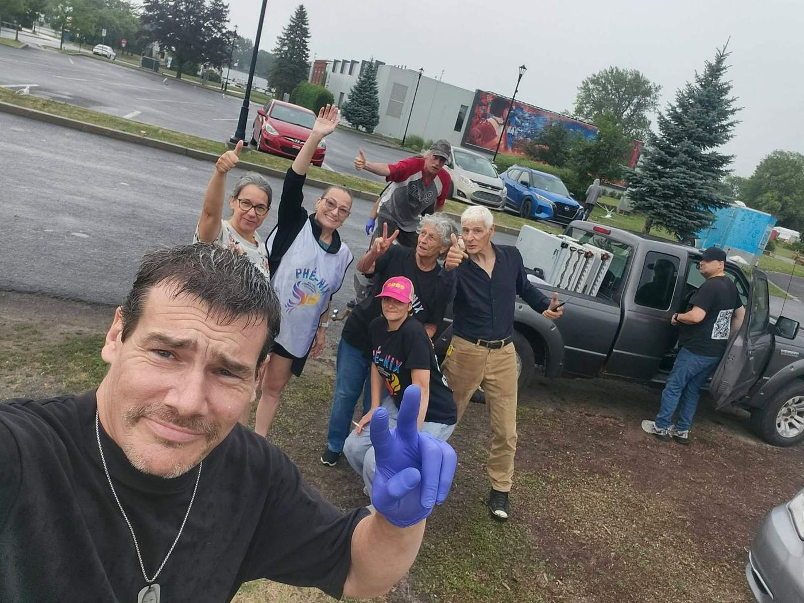

Écrivez-nous votre région et vos disponibilités. Nous vous recontactons pour vous expliquer les étapes, puis vous êtes assigné à une équipe de distribution selon les besoins du moment. L'équipe vous accueille et vous guide sur le terrain.
Un courriel avec votre région et vos disponibilités. Deux minutes suffisent.
Pour vous expliquer les étapes à franchir avant de venir sur le terrain.
À une équipe et à une ville, selon les besoins du moment. Les distributions ont lieu dans certaines villes seulement.
Sur le terrain. Aucun équipement requis, l'équipe prend soin de tout.